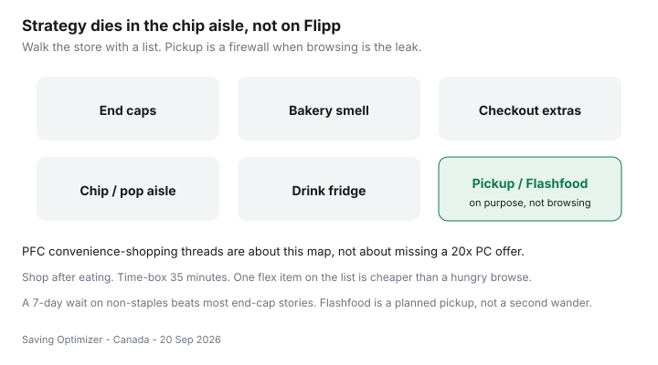

Food & Groceries · Canada
How to stop impulse grocery spending in Canadian stores (behavioural playbook)
The flyer plan dies beside the muffins. Canadian stores are built to leak: end caps, bakery ovens, drink fridges, and a chip aisle that is longer than your list. Coupon wins of $4 vanish inside a $18 browse. Personal Finance Canada threads about shopping from convenience — not strategy — are about this, not about missing a 20× PC offer.
This is a behavioural playbook with Canadian tools: a list, a time box, pickup, and Flashfood used as a planned pickup. It is not therapy and not a ban on treats. One flex item on the list is cheaper than a hungry tour.
Disclosure: There is no natural affiliate product in walking past the bakery. Saving Optimizer does not claim partnerships with grocers, Flashfood, or pickup apps. The free list is the product.
Key takeaways
- Map your trigger zones. Most people have two, not ten. Avoid those aisles unless the list names an item there.
- Shop after eating. Time-box 35 minutes. Leave when the timer ends even if you “just want to look.”
- Pickup is an impulse firewall if you freeze the cart before submit. App upsells are still end caps.
- Non-staples wait 7 days. Flyer protein and milk do not.
- Flashfood is a chooser with a window — use it on a planned Loblaw trip, not as a second wander.
Map your personal trigger zones (end caps, bakery)

Write last month’s regret SKUs. If three of five were bakery, you do not have a “points problem.” You have a nose problem. Walk produce → meat → dairy → frozen → a short centre list. Skip the scenic route.
Shop after eating; time-box the trip
A granola bar in the car is allowed. A “quick look” while starving is not a strategy. Set a 35-minute alarm for a weekly discounter run; 50 minutes if you also do a planned second stop. When it rings, check out. Leftover list items wait or become pickup.
Cash/debit envelope vs credit psychology
Some households still do a debit-only grocery envelope because credit makes extras feel free. That can work if you are not missing a 1–2% card that you pay in full. If you revolve a balance, the interest rate eats every flyer win — pay the card off. The behavioural rule is: the payment method must make extras feel visible, not invisible.
Online pickup as impulse firewall
PC Express, Voilà, and Instacart pickup remove bakery smell. They add substitution risk and fees if you are not careful. Freeze the list; decline replacements on junk; keep produce you care about as “do not substitute.” Fee anatomy is in PC Express vs Voilà vs Instacart. Pickup is not morally superior if you add four snacks in the app.
“Wait 7 days” rule for non-staples
| Item | Wait? | Why |
|---|---|---|
| Flyer protein you already planned | No | The sale ends; the list named it |
| Milk, eggs, oats you are out of | No | Staples |
| New gadget, seasonal tin, extra sauce | Yes — 7 days | If you still want it, it becomes next week’s flex |
| Bakery “treat” | Put one on the list or skip | Unlisted muffins are the leak |
| Clamshell greens you did not plan | Yes | Impulse produce is compost |
Replace browsing with Flashfood purposeful pickup
Opening Flashfood when bored is a new chip aisle. Opening it on Sunday, clipping meat you already cook, and picking it up during Wednesday’s No Frills run is a system — Flashfood guide and the fee break-even. Too Good To Go surprise bags are a treat budget, not a grocery strategy.
One flex item: write it. Buy it. Leave. That is how adults keep chocolate without funding the end-cap designer.
The reusable list is the fence — template. Walk it after dinner.
Sources & date stamps
- Community pattern: r/PersonalFinanceCanada threads on convenience grocery shopping versus a system — behavioural leak, not a volume statistic.
- Love Food Hate Waste Canada planning guidance — a list reduces waste and extras (used 20 Sep 2026).
- Flashfood / pickup mechanics as described in our surplus and delivery guides; verify live fees and substitution settings.
Frequently asked questions
Where do Canadians blow the grocery budget in-store?
End caps, bakery smell, the chip and pop aisle, drink fridges, and checkout extras. PFC threads about shopping from convenience — not strategy — are this map, not a missing coupon.
Does shopping after eating actually help?
It removes the “I need calories now” tax. Pair it with a 35-minute time box and a list. Hungry plus browsing is how a $70 plan becomes $110.
Is pickup better for impulse control?
Often. You cannot smell the rotisserie chicken. You can still add junk in the app — freeze the list before you submit. Watch substitution markups.
What is the 7-day rule?
Non-staples wait a week. If you still want the gadget or the seasonal tin, put it on next Thursday’s flex line. Staples and this week’s flyer protein skip the wait.
Is Flashfood an impulse app?
It becomes one if you open it to wander. It stays a tool if you pick meat you already cook and pick up on a planned Loblaw trip.